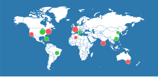

中文介绍
王森章博士2016年1月博士毕业于北京航空航天大学， 2013年9月至2015年9月，作为联合培养博士生在美国伊利诺伊大学芝加哥分校访学，指导教师为Philip S. Yu教授。2016年5月加入南京航空航天大学，现任计算机科学与技术学院特聘副研究员，并入选2017年度“香江学者”资助计划。王森章博士的主要研究方向是数据挖掘、社交网络分析、城市交通大数据分析等，尤其是在社交网络中的信息传播建模和预测、信息传播网络推断、影响力挖掘、基于社交网络数据的交通拥堵评估等方面有比较深入的研究。目前已发表论文80余篇，其代表性研究成果都发表于数据挖掘和人工智能的主流国际会议和期刊，包括KDD14、AAAI13、15、16、SDM14、CIKM17、SIGSPATIAlGIS15、Knowledge and Information System、ACM Transaction on Intelligent System and Technology、IEEE Trans on Multimedia、ACM Trans onInformation System等。王森章博士还曾担任多个国际会议程序委员会委员，包括IJCAI18、AAAI16、AAAI17、CIKM17等。
Last update: June 26, 2020. 访问数据
